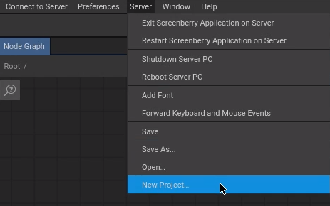
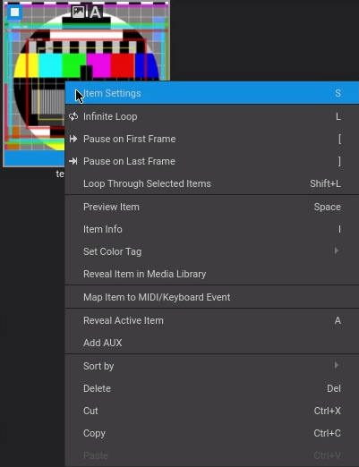
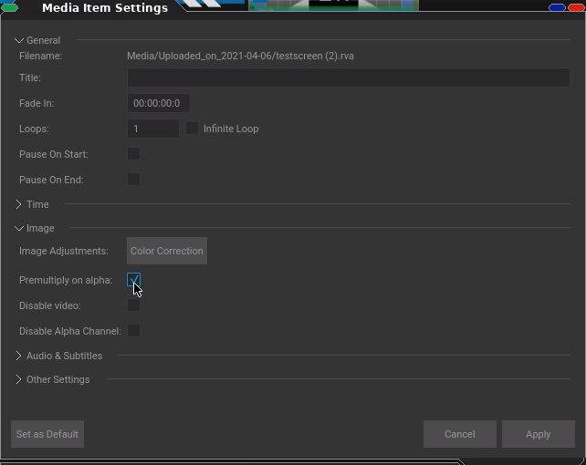

Usage¶
Launch¶
Insert the USB Licenses Dongle
Open Screenberry2Launcher
Open ScreenberryPanelLauncher
Select the server and click Connect to Server
Creating a Project¶
Create a new empty project:
Insert Nodes¶
Open the Node Graph window:
Right click somewhere in the Node Graph window or use the keyboard shortcut (‘N’) to add nodes:
Insert a Media Player, a Display and a Canvas to get a basic playout:
Setup Output Monitor¶
Define your second monitor as main output screen:
Select the Display node and define its size on the settings panel:
Select the Canvas node and define its size and position on the settings panel:
Note
Since our main screen in this example has a resolution of 1920 x 1080 pixel, we shift the Canvas by 1920 pixels to appear on the second screen.
Insert Media¶
Open the MediaPlayer:
Drag and drop your media into it and select Add:
Your imported media appears in the MediaPlayer.
Item Settings¶
When using .png files with alpha channels and it appears jagged, right click the media and select *Item Settings:
in there make sure to check: Premultiply on alpha:
